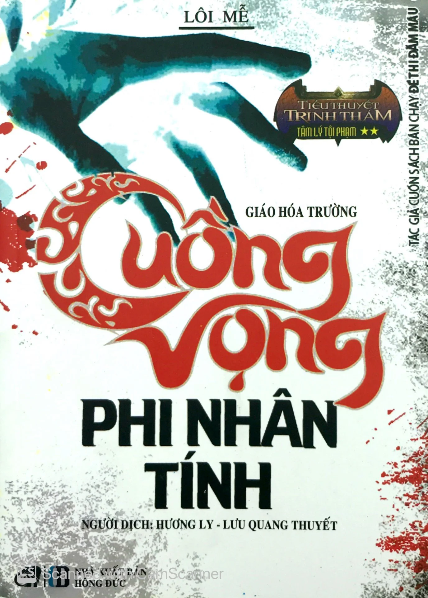

REVIEW SÁCH
Cuồng vọng phi nhân tính
Nhận xét của mình
Tác phẩm cùng tác giả và cũng là phần tiếp của “ Đề thi đẫm máu”. Tác phẩm viết tiếp về Phương Mộc nhưng giờ anh đã là một thành viên trong đội cảnh sát, cũng tiếp đó là những vụ án kinh dị, cách thức ra tay tàn nhẫn nhưng trong câu chuyện này ẩn chứa một bí mật rất to lớn về quá khứ của cuộc thí nghiệm phi nhân tính. Cuốn này rất thú vị nhưng về phần đầu thì hơi chán vì nhiều câu chuyện của những người khác nhau đan xen, lúc đó những cái liên kết cũng chưa rõ ràng nhưng càng về sau thì càng thú vị, tình tiết khiến mình sốc ơi sốc luôn. Nhưng mà đoạn kết mình hơi khó hiểu, không biết có phải do vấn đề đọc hiểu của mình không mà mình không biết nhân vật Liêu Á Phàm đã đi đâu sau đó. Bạn nào đọc rồi mà hiểu thì trả lời cho mình nhé!!!!
🛍️ Tìm mua cuốn sách
Bạn có thể tham khảo giá tại các nhà sách online: